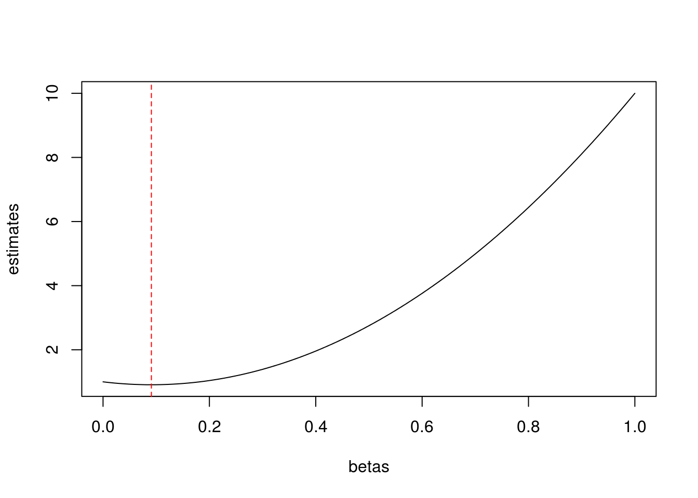
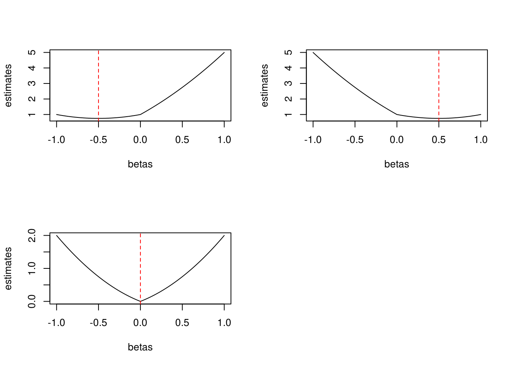
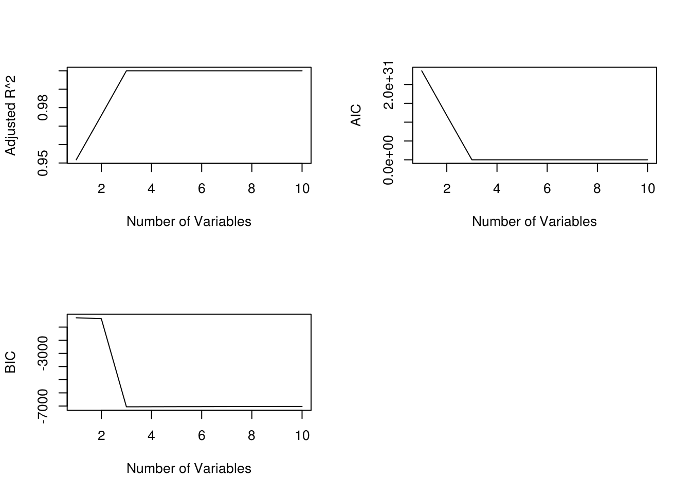
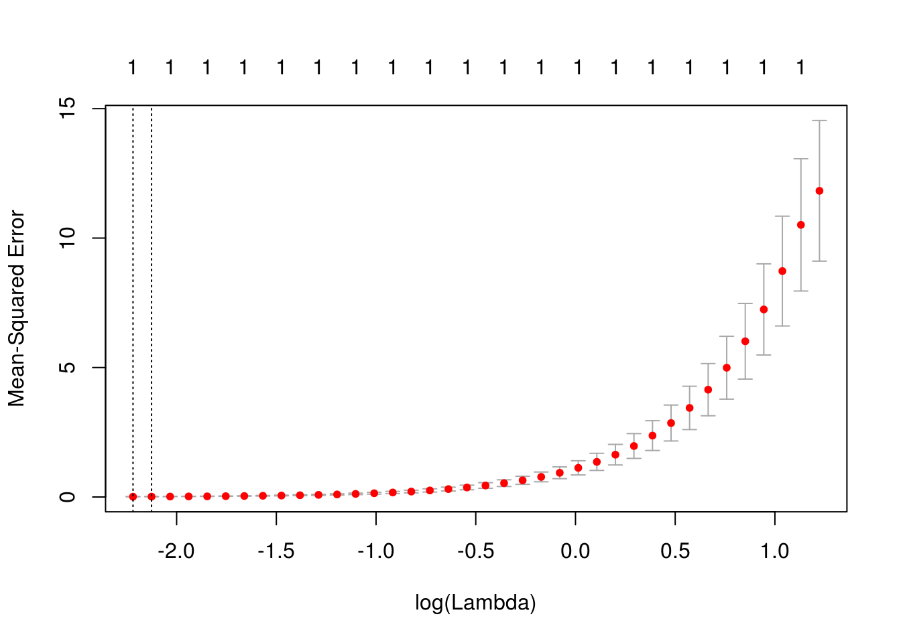
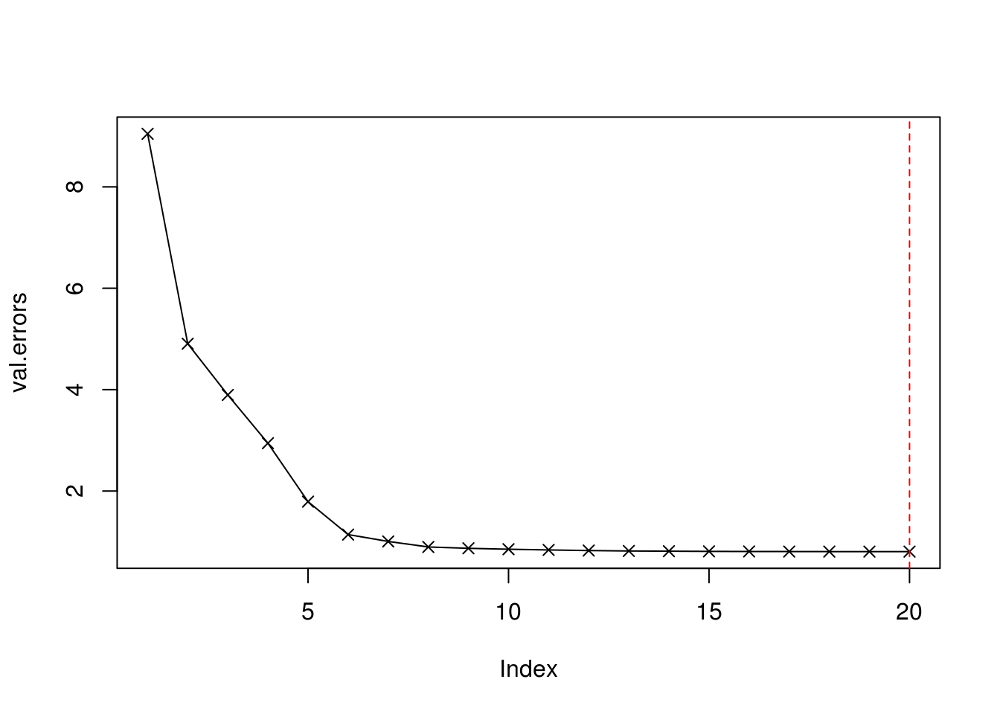
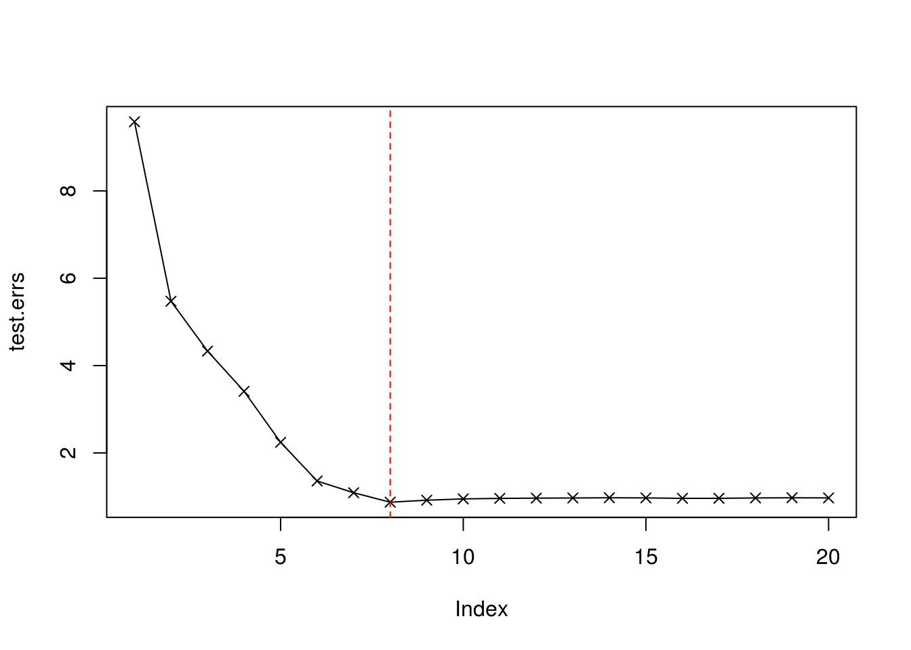
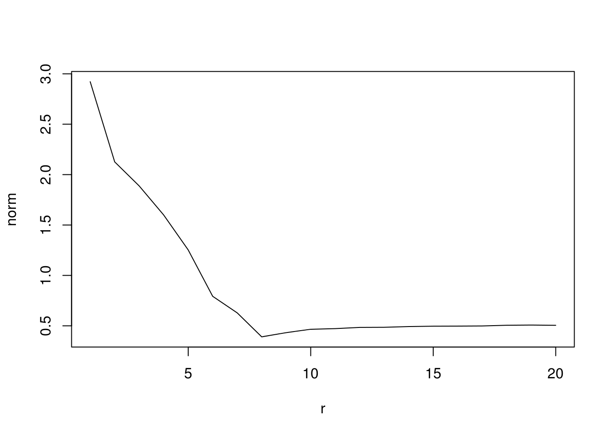

Chapter 6 Linear Model Selection and Regularization
- Best subset will have the best training RSS. This is because it exhaustively searches every possible choice, whereas forward and backward-selection do not, so they might miss the optimal choice.
- There is not enough information to conclude which one will have the smallest test RSS.
- True. Forward selection works by retaining the selectors chosen in the previous step.
- True. Backward selection removes the worst predictor at each step, retaining the predictors at the previous step.
- False. Backwards might select a different set than the forward selection at a given \(k\).
- False.
- False. Best subset might replace a predictor going from \(k\) to \(k+1\). See Table 6.1 on page 209.
- iii is Correct. The tuning parameter allows us to select a simpler model. Since simpler models have less bias, we expect the error to go down as long as the increase in variance is less than the increase in bias.
- iii, for the same reason.
- ii is correct for non-linear models. They can fit a wider class of functions than just linear models (often linear is a subset). This means the model does not bias towards a specific class of functions. However, this comes at the cost of increased variance.
- is correct. As we increase \(s\), we allow the \(\beta_j\) more freedom is minimizing the square residuals. The more freedom we allow, the better we will fit the training data.
- is correct. At this point, we are facing the bias-variance trade-off which comes in the usual U-shaped curve.
- We allow more flexibility in the model which means we will have more variance.
- As we increase \(\lambda\), we bias away from only allowing a few large (relative to their least squares values) coefficients.
- The irreducible error is not affected by the choice of model.
- These answers are the same as 3.
- My solution to this is a little hand-wavey and not nearly rigorous enough. I will have to come back to it if it really irks me.
- We wish to minimize \[\begin{equation} (y_1 - \beta_1 x_{11} - \beta_2 x_{12})^2 + (y_2 - \beta_1 x_{21} - \beta_2 x_{22})^2 - \lambda( \beta_1^2 + \beta_2^2). \end{equation}\]
- If \(x_{11} = x_{12}\) and \(x_{21}=x_{22}\), then we can write \[\begin{equation} \begin{split} (y_1 - \beta_1 x_{11} - \beta_2 x_{12})^2 + (y_2 - \beta_1 x_{21} - \beta_2 x_{22})^2 = \\ (y_1 - x_{11}(\beta_1 + \beta_2))^2 + (y_2 - x_{21}(\beta_1 + \beta_2 ))^2 \end{split} \tag{6.1} \end{equation}\] Then we want to minimize \[\begin{equation} (y_1 - x_{11}(\beta_1 + \beta_2))^2 + (y_2 - x_{21}(\beta_1 + \beta_2 ))^2 + \lambda(\beta_1^2+\beta_2^2) \end{equation}\] there is some \(\beta_1 + \beta_2 = c\) that minimizes the above solution. However, there are ininfitely many \(\beta_1,\beta_2\) combinations such that \(\beta_1 + \beta_2 = c\). Then note that \(\beta_1 = c - \beta_2\). Plugging into \(\lambda(\beta_1^2 - (c-\beta_1)^2)\) which has a known minimum at \(\beta_1 = \beta_2\), thus there is only one solution, that is \(\beta_1 = \beta_2\).
- \[\begin{equation} (y_1 - \beta_1x_{11} - \beta_2 x_{12})^2 + (y_2 - \beta_1 x_{21} - \beta_2 x_{22})^2 - \lambda( |\beta_1| + |\beta_2|). \end{equation}\]
- Same argument as before, but now we have that \[\begin{equation} \begin{split} (y_1 - \beta_1x_{11} - \beta_2 x_{12})^2 + (y_2 - \beta_1 x_{21} - \beta_2 x_{22})^2 = \\ (y_1 - x_{11}(\beta_1 + \beta_2))^2 + (y_2 - x_{21}(\beta_1 + \beta_2 )) \end{split} \end{equation}\] and \[\begin{equation} (y_1 - x_{11}(\beta_1 + \beta_2))^2 + (y_2 - x_{21}(\beta_1 + \beta_2 ))^2 + \lambda(|\beta_1|+|\beta_2|). \end{equation}\] Now note that there is some \(\beta_1+\beta_2 = c\) that minimizes the above equation. However, now \(|\beta_1| + |\beta_2|\) has an infiniten umber of minimizers. Any such \(\beta_1\) and \(\beta_2\) such that \(\beta_1+\beta_2=c\) works. Note that if \(\beta_2 = c\), then \(\beta_1=0\). Likewise, we can have \(\beta_1 = c\) and \(\beta_2 = 0\). The valid solutions are on the line \(\beta_1 + \beta_2 = c\) such that \(0 \leq \beta_1,\beta_2 \leq c\).
- The plot below shows \(\beta\) versus \((y_1 - \beta)^2 + \lambda \beta^2\) on the solid black line. The red dotted line corresponds to where \(y_1/(1+\lambda)\) is. We can see that the ridge regression value is minimized at the red dotted line.
y1 <- 1 #y l <- 10 #lambda betas <- seq(0,1,.01) estimates <- (y1-betas)^2+l*betas^2 plot(betas,estimates,type="l") abline(v=y1/(1+l),col="red",lty=2) b.The same plot is shown below. Since there is three cases, I made a plot for each
par(mfcol=c(2,2)) ys=c(-1,0,1) for(y1 in ys){ l <- 1 #lambda betas <- seq(-1,1,.01) estimates <- (y1-betas)^2+l*abs(betas) plot(betas,estimates,type="l") best_est <- y1 - l/2 if(y1 < -l/2) best_est <- y1 + l/2 else if(abs(y1) <= l/2) best_est<-0; abline(v=best_est,col="red",lty=2) }
- The likelihood for this function will be \[\begin{equation} \begin{split} L &= \prod_{i=1}^n \frac{1}{\sqrt{2 \pi \sigma^2}} \exp \left(-\frac{(y_i - (\beta_0 + \sum_{j=1}^px_{ij}\beta_j))^2}{2\sigma^2} \right)\\ &= \left( \frac{1}{\sqrt{2 \pi \sigma^2}} \right)^n \exp \left(-\frac{\sum_{i=1}^n (y_i - (\beta_0 + \sum_{j=1}^p x_{ij}\beta_j))^2}{2 \sigma^2} \right) \end{split} \end{equation}\]
- The posterior is \[\begin{equation} \begin{split} &\left( \frac{1}{\sqrt{2 \pi \sigma^2}} \right)^n \exp \left(-\frac{\sum_{i=1}^n (y_i - (\beta_0 + \sum_{j=1}^p x_{ij}\beta_j))^2}{2 \sigma^2} \right) \prod_{j=1}^n \frac{1}{2b} \exp \left(\frac{-|\beta_j|}{b} \right)\\ =& \left( \frac{1}{\sqrt{2 \pi \sigma^2}} \right)^n \exp \left(-\frac{\sum_{i=1}^n (y_i - (\beta_0 + \sum_{j=1}^p x_{ij}\beta_j))^2 - \frac{2\sigma^2}{b} \sum_{j=1}^n |\beta_j|}{2 \sigma^2} \right) \end{split} \tag{6.2} \end{equation}\]
- Looking at this last equation, we can see that if we let \(\lambda = \frac{2 \sigma^2}{b}\), then the when we minimize \[\begin{equation} \sum_{i=1}^n (y_i - (\beta_0 + \sum_{j=1}^p x_{ij}\beta_j))^2 - \lambda \sum_{j=1}^n |\beta_j| \end{equation}\] then we maximize (6.2). Maximizing (6.2) is equivalent to the mode.
- \[\begin{equation} \begin{split} &\left( \frac{1}{\sqrt{2 \pi \sigma^2}} \right)^n \exp \left(-\frac{\sum_{i=1}^n (y_i - (\beta_0 + \sum_{j=1}^p x_{ij}\beta_j))^2}{2 \sigma^2} \right) \prod_{j=1}^n \frac{1}{\sqrt{2 \pi c}} \exp \left(-\frac{\beta_j^2}{2c} \right) \\ =& \left( \frac{1}{\sqrt{2 \pi \sigma^2}} \right)^n \exp \left(-\frac{\sum_{i=1}^n (y_i - (\beta_0 + \sum_{j=1}^p x_{ij} \beta_j))^2 + \frac{\sigma^2}{c} \sum_{j=1}^p \beta_j^2}{2 \sigma^2} \right) \end{split} \tag{6.3} \end{equation}\]
- Now let \(\lambda = \frac{\sigma^2}{c}\). \[\begin{equation} \left( \frac{1}{\sqrt{2 \pi \sigma^2}} \right)^n \exp \left(-\frac{\sum_{i=1}^n (y_i - (\beta_0 + \sum_{j=1}^p x_{ij} \beta_j))^2 + \lambda \sum_{j=1}^p \beta_j^2}{2 \sigma^2} \right) \end{equation}\] Ridge regression minimizes \[\begin{equation} \sum_{i=1}^n (y_i - (\beta_0 + \sum_{j=1}^p x_{ij} \beta_j))^2 + \lambda \sum_{j=1}^p \beta_j^2 \tag{6.4} \end{equation}\] and therefore minimizes (6.3), so is the mode. It is also the mean since the exponent (6.4) is a quadratic function which is symmetric around its minimum.
set.seed(927) x <- rnorm(100) eps <- rnorm(100)b_0 <- 2; b_1 <- 2; b_2 <- .5; b_3 <- .5 y <- b_0 + b_1 * x + b_2 * x^2 + b_3 * x^3library(leaps) regfit.full <- regsubsets(y ~ poly(x, degree=10, raw=TRUE), data=data.frame(x,y),nvmax=11) reg.summary <- summary(regfit.full) print("Best adjr2 model")## [1] "Best adjr2 model"coef(regfit.full, id=which.max(reg.summary$adjr2))## (Intercept) poly(x, degree = 10, raw = TRUE)1 ## 2.0 2.0 ## poly(x, degree = 10, raw = TRUE)2 poly(x, degree = 10, raw = TRUE)3 ## 0.5 0.5print("Best BIC model")## [1] "Best BIC model"coef(regfit.full, id=which.min(reg.summary$bic))## (Intercept) poly(x, degree = 10, raw = TRUE)1 ## 2.0 2.0 ## poly(x, degree = 10, raw = TRUE)2 poly(x, degree = 10, raw = TRUE)3 ## 0.5 0.5print("Best Cp model")## [1] "Best Cp model"coef(regfit.full, id=which.min(reg.summary$cp))## (Intercept) poly(x, degree = 10, raw = TRUE)1 ## 2.0 2.0 ## poly(x, degree = 10, raw = TRUE)2 poly(x, degree = 10, raw = TRUE)3 ## 0.5 0.5We can see that they all return the 3 variable model, which is good. Below is a plot of the three different measures.
 We can see that the plots all cap out or minimize basically at three.par(mfcol=c(2,2)) plot(reg.summary$adjr2,xlab="Number of Variables", ylab="Adjusted R^2", type="l") plot(reg.summary$bic,xlab="Number of Variables", ylab="BIC", type="l") plot(reg.summary$cp,xlab="Number of Variables", ylab="AIC", type="l")regfit.fwd <- regsubsets(y~poly(x,degree=10,raw=TRUE), data=data.frame(x,y),nvmax=11, method="forward") reg.summary.f <- summary(regfit.fwd) print("Best foward adjr2 model")## [1] "Best foward adjr2 model"coef(regfit.full, id=which.max(reg.summary.f$adjr2))## (Intercept) poly(x, degree = 10, raw = TRUE)1 ## 2.0 2.0 ## poly(x, degree = 10, raw = TRUE)2 poly(x, degree = 10, raw = TRUE)3 ## 0.5 0.5print("Best forward BIC model")## [1] "Best forward BIC model"coef(regfit.full, id=which.min(reg.summary.f$bic))## (Intercept) poly(x, degree = 10, raw = TRUE)1 ## 2.0 2.0 ## poly(x, degree = 10, raw = TRUE)2 poly(x, degree = 10, raw = TRUE)3 ## 0.5 0.5print("Best forward Cp model")## [1] "Best forward Cp model"coef(regfit.full, id=which.min(reg.summary.f$cp))## (Intercept) poly(x, degree = 10, raw = TRUE)1 ## 2.0 2.0 ## poly(x, degree = 10, raw = TRUE)2 poly(x, degree = 10, raw = TRUE)3 ## 0.5 0.5The forward still returns the three variable models.
regfit.bwd <- regsubsets(y~poly(x,degree=10,raw=TRUE), data=data.frame(x,y),nvmax=11, method="backward") reg.summary.b <- summary(regfit.bwd) print("True coefficients")## [1] "True coefficients"c(b_0,b_1,b_2,b_3)## [1] 2.0 2.0 0.5 0.5print("Best backward adjr2 model")## [1] "Best backward adjr2 model"coef(regfit.full, id=which.max(reg.summary.b$adjr2))## (Intercept) poly(x, degree = 10, raw = TRUE)1 ## 2.0 2.0 ## poly(x, degree = 10, raw = TRUE)2 poly(x, degree = 10, raw = TRUE)3 ## 0.5 0.5print("Best backward BIC model")## [1] "Best backward BIC model"coef(regfit.full, id=which.min(reg.summary.b$bic))## (Intercept) poly(x, degree = 10, raw = TRUE)1 ## 2.0 2.0 ## poly(x, degree = 10, raw = TRUE)2 poly(x, degree = 10, raw = TRUE)3 ## 0.5 0.5print("Best backward Cp model")## [1] "Best backward Cp model"coef(regfit.full, id=which.min(reg.summary.b$cp))## (Intercept) poly(x, degree = 10, raw = TRUE)1 ## 2.0 2.0 ## poly(x, degree = 10, raw = TRUE)2 poly(x, degree = 10, raw = TRUE)3 ## 0.5 0.5The backwards also chooses the 3 variable models. Let’s compare the results for the BIC to see if they were the same for all the models.
rbind(full=reg.summary$bic, forward=reg.summary.f$bic, backward=reg.summary.b$bic)## [,1] [,2] [,3] [,4] [,5] [,6] ## full -294.9239 -360.2096 -7056.899 -7052.388 -7048.760 -7045.127 ## forward -294.9239 -360.2096 -7056.899 -7052.388 -7048.760 -7044.375 ## backward -294.9239 -360.2096 -7056.899 -7052.359 -7048.708 -7044.578 ## [,7] [,8] [,9] [,10] ## full -7040.571 -7036.856 -7033.163 -7028.707 ## forward -7040.171 -7036.856 -7033.163 -7028.707 ## backward -7040.274 -7036.856 -7033.163 -7028.707library(glmnet)## Loading required package: Matrix## Loading required package: foreach## Loaded glmnet 2.0-13set.seed(1) x.mod <- model.matrix(y ~ poly(x,degree=10,raw=TRUE), data=data.frame(x=y,y=y))[,-1] cv.out <- cv.glmnet(x.mod,y,alpha=1) plot(cv.out)
bestlam<-cv.out$lambda.min lambda.mod <- glmnet(x.mod,y,alpha=1) predict(lambda.mod,type="coefficients",s=bestlam)
The results of the Lasso aren’t great. I imagine this is because the linear model is perfect, so I don’t see how the Lasso would improve on anything.## 11 x 1 sparse Matrix of class "dgCMatrix" ## 1 ## (Intercept) 0.04818897 ## poly(x, degree = 10, raw = TRUE)1 0.96800733 ## poly(x, degree = 10, raw = TRUE)2 . ## poly(x, degree = 10, raw = TRUE)3 . ## poly(x, degree = 10, raw = TRUE)4 . ## poly(x, degree = 10, raw = TRUE)5 . ## poly(x, degree = 10, raw = TRUE)6 . ## poly(x, degree = 10, raw = TRUE)7 . ## poly(x, degree = 10, raw = TRUE)8 . ## poly(x, degree = 10, raw = TRUE)9 . ## poly(x, degree = 10, raw = TRUE)10 .b_7 <- 2.5 y7 <- b_0 + b_0 * x^7 + eps deg7.full <- regsubsets(y7 ~ poly(x,degree=10,raw=TRUE),data.frame(x,y7)) print("Best Cp model")## [1] "Best Cp model"coef(deg7.full, id=which.min(reg.summary$cp))## (Intercept) poly(x, degree = 10, raw = TRUE)3 ## 1.86157516 0.18909447 ## poly(x, degree = 10, raw = TRUE)5 poly(x, degree = 10, raw = TRUE)7 ## -0.09457088 2.00877704x7.mod <- model.matrix(y7 ~ poly(x,degree=10), data=data.frame(x,y7))[,-1] cv.out <- cv.glmnet(x7.mod,y7,alpha=1) bestlam <- cv.out$lambda.min lambda.mod <- glmnet(x.mod,y7,alpha=1) predict(lambda.mod,type="coefficients",s=bestlam)## 11 x 1 sparse Matrix of class "dgCMatrix" ## 1 ## (Intercept) -5.11224579 ## poly(x, degree = 10, raw = TRUE)1 17.43961036 ## poly(x, degree = 10, raw = TRUE)2 -7.78762588 ## poly(x, degree = 10, raw = TRUE)3 0.87266323 ## poly(x, degree = 10, raw = TRUE)4 -0.01318214 ## poly(x, degree = 10, raw = TRUE)5 . ## poly(x, degree = 10, raw = TRUE)6 . ## poly(x, degree = 10, raw = TRUE)7 . ## poly(x, degree = 10, raw = TRUE)8 . ## poly(x, degree = 10, raw = TRUE)9 . ## poly(x, degree = 10, raw = TRUE)10 .Once again, the regular linear regression out performs the lasso. Lasso is performing pretty terribly. Am I doing something wrong?
data(College,package="ISLR")
n<-nrow(College)a.
```r
set.seed(1)
train <- sample(1:n, n/2)
test <- (-train)
#reference MSE if using just the mean
y.test <- College$Apps[test]
y.train <- College$Apps[train]
(ref.err<-mean((mean(y.test)-y.test)^2))
```
```
## [1] 11205007
```
b.
```r
lm.mod <- lm(Apps ~ ., data=College[train,])
lm.pred <- predict(lm.mod, College[test,])
(lm.err<-mean((lm.pred-y.test)^2))
```
```
## [1] 1108531
```
c.
```r
set.seed(1)
x.mod <- model.matrix(Apps ~ ., data=College)[,-1]
ridge.mod.cv<-cv.glmnet(x.mod[train,],y.train,alpha=0)
ridge.best.lam <- ridge.mod.cv$lambda.min
ridge.mod <- glmnet(x.mod[train,],y.train,alpha=0)
ridge.pred <- predict(ridge.mod,newx=x.mod[test,],s=ridge.best.lam)
(ridge.err<-mean((ridge.pred-y.test)^2))
```
```
## [1] 1037616
```
d.
```r
set.seed(1)
x.mod <- model.matrix(Apps ~ ., data=College)[,-1]
lasso.mod.cv <- cv.glmnet(x.mod[train,],y.train,alpha=1)
lasso.best.lam <- lasso.mod.cv$lambda.min
lasso.mod <- glmnet(x.mod[train,],y.train,alpha=1)
lasso.pred <- predict(lasso.mod,newx=x.mod[test,],s=lasso.best.lam)
(lasso.err<-mean((lasso.pred-y.test)^2))
```
```
## [1] 1030941
```
e.
```r
library(pls)
```
```
##
## Attaching package: 'pls'
```
```
## The following object is masked from 'package:caret':
##
## R2
```
```
## The following object is masked from 'package:stats':
##
## loadings
```
```r
set.seed(1)
pcr.mod <- pcr(Apps ~ ., data=College, subset=train, scale=TRUE, validation="CV")
validationplot(pcr.mod,val.type="MSEP")
```
<img src="ISLR-exercises_files/figure-html/unnamed-chunk-155-1.png" width="672" />
```r
summary(pcr.mod)
```
```
## Data: X dimension: 388 17
## Y dimension: 388 1
## Fit method: svdpc
## Number of components considered: 17
##
## VALIDATION: RMSEP
## Cross-validated using 10 random segments.
## (Intercept) 1 comps 2 comps 3 comps 4 comps 5 comps 6 comps
## CV 4335 4179 2364 2374 1996 1844 1845
## adjCV 4335 4182 2360 2374 1788 1831 1838
## 7 comps 8 comps 9 comps 10 comps 11 comps 12 comps 13 comps
## CV 1850 1863 1809 1809 1812 1815 1825
## adjCV 1844 1857 1801 1800 1804 1808 1817
## 14 comps 15 comps 16 comps 17 comps
## CV 1810 1823 1273 1281
## adjCV 1806 1789 1260 1268
##
## TRAINING: % variance explained
## 1 comps 2 comps 3 comps 4 comps 5 comps 6 comps 7 comps
## X 31.216 57.68 64.73 70.55 76.33 81.30 85.01
## Apps 6.976 71.47 71.58 83.32 83.44 83.45 83.46
## 8 comps 9 comps 10 comps 11 comps 12 comps 13 comps 14 comps
## X 88.40 91.16 93.36 95.38 96.94 97.96 98.76
## Apps 83.47 84.53 84.86 84.98 84.98 84.99 85.24
## 15 comps 16 comps 17 comps
## X 99.40 99.87 100.00
## Apps 90.87 93.93 93.97
```
```r
pcr.pred <- predict(pcr.mod,College[test,],ncomp=16)
(pcr.err<-mean((pcr.pred-y.test)^2))
```
```
## [1] 1166897
```
f. For Partial Least Squares, a lot of the componenets have roughly the same CV after 4 components.
```r
set.seed(1)
pls.mod <- plsr(Apps ~ ., data=College, subset=train, validation="CV")
validationplot(pls.mod, val.type="MSEP")
```
<img src="ISLR-exercises_files/figure-html/unnamed-chunk-156-1.png" width="672" />
```r
summary(pls.mod)
```
```
## Data: X dimension: 388 17
## Y dimension: 388 1
## Fit method: kernelpls
## Number of components considered: 17
##
## VALIDATION: RMSEP
## Cross-validated using 10 random segments.
## (Intercept) 1 comps 2 comps 3 comps 4 comps 5 comps 6 comps
## CV 4335 2123 1986 1792 1411 1375 1383
## adjCV 4335 2115 1896 1767 1398 1366 1373
## 7 comps 8 comps 9 comps 10 comps 11 comps 12 comps 13 comps
## CV 1390 1397 1314 1311 1300 1296 1281
## adjCV 1379 1385 1321 1300 1289 1283 1269
## 14 comps 15 comps 16 comps 17 comps
## CV 1281 1283 1283 1281
## adjCV 1269 1271 1272 1268
##
## TRAINING: % variance explained
## 1 comps 2 comps 3 comps 4 comps 5 comps 6 comps 7 comps
## X 42.26 51.47 90.73 97.48 98.65 99.02 99.27
## Apps 78.91 87.10 88.93 91.89 91.99 92.05 92.12
## 8 comps 9 comps 10 comps 11 comps 12 comps 13 comps 14 comps
## X 99.97 99.99 100.00 100.00 100.00 100.00 100.00
## Apps 92.13 92.30 93.08 93.38 93.73 93.74 93.75
## 15 comps 16 comps 17 comps
## X 100.00 100.00 100.00
## Apps 93.75 93.76 93.97
```
```r
pls.pred <- predict(pls.mod,College[test,],ncomp=4)
(pls.err<-mean((pls.pred-y.test)^2))
```
```
## [1] 1232841
```
g. The lasso and ridge performed better than the rest of the methods. We can see that the lasso did the best, whereas PLS did the worst. In addition, just a linear model outperformed both PCR and PLS.
```r
rbind(ref.err,lm.err,ridge.err,lasso.err,pcr.err,pls.err)
```
```
## [,1]
## ref.err 11205007
## lm.err 1108531
## ridge.err 1037616
## lasso.err 1030941
## pcr.err 1166897
## pls.err 1232841
```set.seed(1) X <- rnorm(20*1000) dim(X) <- c(1000,20) (B <- sample(c(-2,-1,-.5,0,.5,1,2),size=20,replace=TRUE,prob=c(1,1,1,10,1,1,1)))## [1] 0.0 0.0 0.0 0.0 0.0 -1.0 0.0 1.0 1.0 0.0 0.0 1.0 0.0 0.0 ## [15] 0.5 0.0 -2.0 0.0 0.5 -2.0Y<-X%*%B+rnorm(20)train <- sample.int(1000,size=100) test <- - trainlibrary(leaps) full.fit <- regsubsets(Y~.,data=data.frame(Y,X)[train,],nvmax=20) X.mod <- model.matrix(Y ~ X) val.errors <- double(20) for(i in 1:20){ coefi<-coef(full.fit,id=i) pred <- X.mod[train,names(coefi)]%*%coefi val.errors[i]=mean((Y[train]-pred)^2) } plot(val.errors,type='l') points(val.errors,pch=4) abline(v=which.min(val.errors),col="red",lty=2)- The minimum occurs at 8 variables, which is true to the original \(\beta\).
test.errs <- double(20) for(i in 1:20){ coefi<-coef(full.fit,id=i) pred <- X.mod[test,names(coefi)]%*%coefi test.errs[i]=mean((Y[test]-pred)^2) } plot(test.errs,type='l') points(test.errs,pch=4) abline(v=which.min(test.errs),lty=2,col="red")- The minimum value occurs at 8 variables, which is true to our model,
sum(B==0)=12. Comparing the coefficients:
names(B) <- colnames(X.mod)[2:21] True.B <- B[B!=0] True.B <- c(`(Intercept)`=0,True.B) Fitted <- coef(full.fit,id=8) rbind(True.B, Fitted, Err=(True.B-Fitted))## (Intercept) X6 X8 X9 X12 X15 ## True.B 0.000000 -1.0000000 1.00000000 1.00000000 1.0000000 0.50000000 ## Fitted 0.260937 -0.7966302 0.97115844 1.03481958 1.1459732 0.42127106 ## Err -0.260937 -0.2033698 0.02884156 -0.03481958 -0.1459732 0.07872894 ## X17 X19 X20 ## True.B -2.00000000 0.5000000 -2.000000000 ## Fitted -2.04178071 0.3910316 -2.007931041 ## Err 0.04178071 0.1089684 0.007931041norms <- double(20) B2 <- c(0,B) names(B2) <- colnames(X.mod) for(i in 1:20){ coefi <- coef(full.fit,id=i) temp<-rep(0,21) names(temp)<-colnames(X.mod) temp[names(coefi)] <- coefi norms[i]=sqrt(sum((B2-temp)^2)) } plot(norms,xlab="r",ylab="norm",type="l") We can see that it looks pretty similar to the test MSE plot. The minimum of the plot occurs at 8, which is the same as the index of the test errors, 8.
data(Boston,package="MASS")
head(Boston)## crim zn indus chas nox rm age dis rad tax ptratio black
## 1 0.00632 18 2.31 0 0.538 6.575 65.2 4.0900 1 296 15.3 396.90
## 2 0.02731 0 7.07 0 0.469 6.421 78.9 4.9671 2 242 17.8 396.90
## 3 0.02729 0 7.07 0 0.469 7.185 61.1 4.9671 2 242 17.8 392.83
## 4 0.03237 0 2.18 0 0.458 6.998 45.8 6.0622 3 222 18.7 394.63
## 5 0.06905 0 2.18 0 0.458 7.147 54.2 6.0622 3 222 18.7 396.90
## 6 0.02985 0 2.18 0 0.458 6.430 58.7 6.0622 3 222 18.7 394.12
## lstat medv
## 1 4.98 24.0
## 2 9.14 21.6
## 3 4.03 34.7
## 4 2.94 33.4
## 5 5.33 36.2
## 6 5.21 28.7Boston.mat <- model.matrix(crim ~ ., Boston)a. First, split up the set into a test set and a training set.
```r
set.seed(1)
train<-sample.int(nrow(Boston),size=nrow(Boston)*.5)
test<--train
y.train <- Boston$crim[train]
y.test <- Boston$crim[test]
```
First linear models. I use best subsets to select the best train set using BIC, then get the MSE on the test set.
```r
full.fit <- regsubsets(crim ~ ., data=Boston[train,],nvmax=ncol(Boston))
lm.best.coef <- coef(full.fit,id=which.min(summary(full.fit)$bic))
lm.pred <- Boston.mat[test,names(lm.best.coef)]%*%lm.best.coef
(lm.err <- mean((lm.pred-y.test)^2))
```
```
## [1] 39.46705
```
```r
full.lm.mod <- lm(crim ~ ., Boston, subset=train)
lm.full.pred <- predict(full.lm.mod, Boston[test,])
(lm.full.err <- mean((lm.full.pred - y.test)^2))
```
```
## [1] 39.27592
```
Next, Ridge and Lasso using cross validation.
```r
library(glmnet)
runGlmNet <- function(alpha) {
set.seed(927)
cv <- cv.glmnet(Boston.mat[train,],y.train,alpha=alpha)
best.lam <- cv$lambda.min
mod <- glmnet(Boston.mat[train,],y.train,alpha=alpha)
pred <- predict(mod,newx=Boston.mat[test,],s=best.lam)
err<-mean((pred-y.test)^2)
list(mod=mod,cv=cv,best.lam=best.lam,err=err)
}
#Ridge first
ridge.mod<-runGlmNet(0)
ridge.mod$err
```
```
## [1] 38.36353
```
```r
#Lasso
lasso.mod<-runGlmNet(1)
lasso.mod$err
```
```
## [1] 38.34268
```
Last, PCR. 9 components looks pretty good.
```r
library(pls)
set.seed(927)
pcr.mod <- pcr(crim~.,data=Boston,subset=train,scale=TRUE,validation="CV")
summary(pcr.mod)
```
```
## Data: X dimension: 253 13
## Y dimension: 253 1
## Fit method: svdpc
## Number of components considered: 13
##
## VALIDATION: RMSEP
## Cross-validated using 10 random segments.
## (Intercept) 1 comps 2 comps 3 comps 4 comps 5 comps 6 comps
## CV 8.892 7.481 7.468 7.177 7.200 7.180 7.240
## adjCV 8.892 7.476 7.463 7.171 7.185 7.172 7.227
## 7 comps 8 comps 9 comps 10 comps 11 comps 12 comps 13 comps
## CV 7.236 7.214 7.165 7.124 7.158 7.211 7.079
## adjCV 7.220 7.209 7.144 7.101 7.133 7.182 7.051
##
## TRAINING: % variance explained
## 1 comps 2 comps 3 comps 4 comps 5 comps 6 comps 7 comps
## X 49.04 60.72 69.75 76.49 83.02 88.40 91.73
## crim 30.39 30.93 36.63 37.31 37.35 37.98 38.85
## 8 comps 9 comps 10 comps 11 comps 12 comps 13 comps
## X 93.77 95.73 97.36 98.62 99.57 100.00
## crim 39.94 41.89 42.73 42.73 43.55 45.48
```
```r
validationplot(pcr.mod,val.type = "MSEP")
```
<img src="ISLR-exercises_files/figure-html/unnamed-chunk-169-1.png" width="672" />
```r
pcr.pred <- predict(pcr.mod,Boston[test,],ncomp=9)
(pcr.err <- mean((pcr.pred-y.test)^2))
```
```
## [1] 39.52134
```
Now let's summarize the errors:
```r
lasso.err <- lasso.mod$err
ridge.err <- ridge.mod$err
rbind(lm.err, lm.full.err, ridge.err, lasso.err, pcr.err)
```
```
## [,1]
## lm.err 39.46705
## lm.full.err 39.27592
## ridge.err 38.36353
## lasso.err 38.34268
## pcr.err 39.52134
```
It appears Lasso outperforms the rest of the models, but ridge is close behind. PCR doesn't do too well. Our best subsets didn't improve on the full lm either using the validation set approach, but they are close that it might not be significant.
b. I'll just propose the Lasso model
```r
coef(lasso.mod$mod, s=lasso.mod$best.lam)
```
```
## 15 x 1 sparse Matrix of class "dgCMatrix"
## 1
## (Intercept) 6.581848709
## (Intercept) .
## zn 0.036372942
## indus -0.030858830
## chas -0.509062651
## nox -9.125346045
## rm 1.156872387
## age .
## dis -0.939767796
## rad 0.513033837
## tax .
## ptratio -0.204441060
## black -0.002435222
## lstat 0.175839323
## medv -0.187702907
```
c. We can see that Lasso only removed two coefficients.